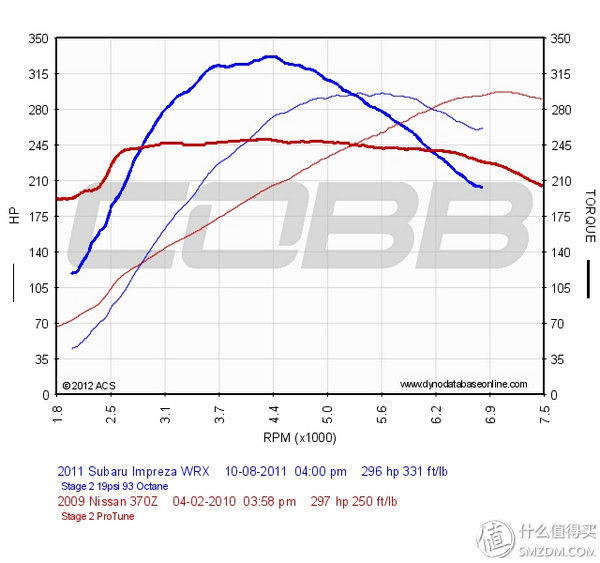
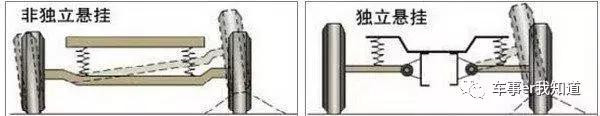
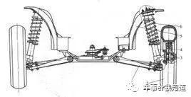
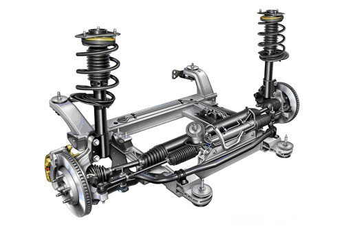
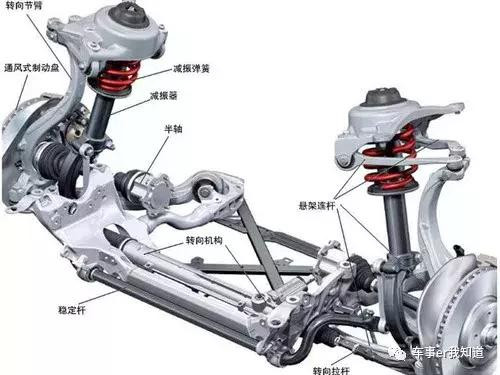
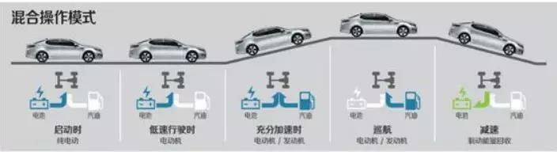

How to Select an Automobile¶
summarized by Jianan, 2019. 本章节主要收集了选车的必要知识储备并且分享了自己的一些观点和心得，以帮助各位选择一辆自己满意的小车。本章节所持观点不一定正确，只提供参考意义。
自然吸气与涡轮增压¶
内燃机（英语：Internal combustion engine，缩写为ICE）是热机的一种，能将燃料的化学能转化动能。一般的实现方式为，燃料与空气混合燃烧，产生热能，气体受热膨胀，通过机械装置转化为机械能对外做功。内燃机有非常广泛的应用，车辆、船舶、飞机、火箭等的发动机基本都是内燃机，其最常见的例子即为车用汽油机与柴油机。
内燃机与外燃机：内燃机的燃烧气体同时也是工作介质，比如汽油机中，汽油燃烧后的气体直接推动活塞做功。与此相对，燃料不作为工作介质的热机则称为外燃机，比如蒸汽机的工作介质（蒸气）并不是燃料。
往复活塞式内燃机： 汽车上最常见的汽油机与柴油机都属于往复活塞式内燃机。气缸的内空气与燃料的混合气燃烧后，高压气体推动曲柄连杆机构产生扭矩，通过曲轴对外做功，即燃料的化学能最终转化为曲轴旋转的动能。汽油机一般是点燃式发动机，燃料与空气的混合气体在压缩行程的末端被火花塞点燃，随即发生爆炸并推动活塞作往复运动；而柴油机也叫压燃式发动机，燃料一般被喷入气缸并发生自燃，自燃后的混合气体也因膨胀而推动了活塞。除了点燃和压燃这两种主要方式外，还有复合式燃烧过程，兼具点燃与压燃式内燃机的特点。
往复活塞式内燃机的工作周期被分为进气、压缩、做功、排气共四个过程。通过进气与排气，将燃料与工作介质进行更换，而做功行程则是将热能转化为机械能。通过四个冲程（即活塞从气缸的一端移动向另一端）完成循环的被称作四冲程循环，汽车发动机多采用这种形式。只需两个冲程即完成一次循环的被称作二冲程循环，在较小功率的发动机如摩托车发动机上较为常见。
往复活塞式内燃机工作流程图：

自然吸气与涡轮增压: 自然吸气： naturally aspirated,一般简写为NA；涡轮增压： turbocharged engine, 所以在排量后面会带有T, 比如2.0T, 意思为排量为2L涡轮增压。涡轮增压在于在每个冲程依靠涡轮压缩更多空气进入燃烧室，更多的空气意味着需要更多的燃油去混合，也就意味着每个循环能提供更大的功率。即相同体积的气缸，涡轮增压一般能提供更大的功率和扭矩。举个例子：1.6自然吸气最大扭矩150牛，1.4涡轮增压250牛。换句话说，power-to-weight ratio，即功率质量比涡轮增压远大于自然吸气发动机。虽然涡轮增压发动机有着更高的功率质量比，但是存在涡轮迟滞(Turbo Lag)，是指当油门全开后，涡轮的增压压力一直升高到最大值所需要的时间。
涡轮迟滞，Turbo Lag，是指发动机在低转速时，由于产生的废气量低，不足以带动涡轮的运转。所以，需要等到发动机转速提高之后，废气动力较大时，涡轮才能启动。这个时间差就是涡轮迟滞。涡轮迟滞越大，表示该发动机的发力转速越高，可利用的发动机转速也越少。如果是大增压发动机。涡轮迟滞大预示着其可能突然发力，对于平常驾驶将难于掌握，驾驶困难甚至有安全隐患。现在越来越多的原装涡轮发动机在得到比自然吸气发动机更大动力的同时，尽可能将涡轮迟滞降低，争取让其表现接近自然吸气发动机的线性。使涡轮车的亲近性与易驾驶性更接近非涡轮车。
| 自然吸气 (NA) | 涡轮增压 (Turbo) | |
|---|---|---|
| 技术可靠 | 技术成熟可靠 | 零件多，需要高品质机油保养 |
| 维护成本 | 低 | 高 |
| 使用寿命/机械损耗 | 寿命长，损耗小 | 高温工作，涡轮具有使用寿命 |
| 动力表现 | 平顺缓慢 | 提速快，更强劲； 但存在动力迟滞 |
| 驾乘舒适性 | 好 | 差 |
| 油耗表现(同排量) | 低 | 高 |
| 油耗表现(同功率) | 高 | 低 |
| 低速拥堵路面油耗 | 低 | 高 |
| 高速油耗表现 | 高 | 低 |
| 总体油耗 | 相近 | 相近 |
-
结构差异： 涡轮增压和自吸多了一个“空气压缩机”，通过压缩空气来增加进气量。自然吸气发动机结构比较简单，发展时间比较长所以结构上也比较完善。
-
机械损耗与使用寿命：
- 涡轮增压工作长时间处于高温状态，在正常工作状态下是可以充分冷却，但是停车熄火断电后，由于涡轮片在惯性的带动下高速运转，造成轴承的损坏，长期以往就会降低涡轮的使用寿命。所以在理论上涡轮增压是没有自吸发动机的寿命长。
-
技术可靠与维护成本：
- 自然吸气发动机经过了长时间的技术积累，做得相对比较完善，技术已经非常可靠，质量稳定，油品方面没有涡轮增压的要求高。
- 涡轮增压发动机故障率相对较高，相对于自吸发动机，涡轮发动机对保养有着较高的要求，必须按时保养，必须使用品质高的机油，后期维护费用一般来说比较高。
-
动力表现：
- 自吸发动机的加速能力是比较平顺而缓慢的，容易掌控。噪音也比较低。
-
在排量相同情况下涡轮增压比自然吸气发动机提供更高的扭矩，动力性能优于自然吸气发动机。譬如一台1.8L排量的自然吸气发动机，经过增压后，动力性能可以轻松达到2.4L发动机的水平。
-
涡轮发动机加速表现的线性程度不如自吸入，存在涡轮迟滞效应。
-
涡轮更早的最大功率出现转速
-
NA(naturally aspirated) 和 turbo 在 功率和扭矩的对比：

变速箱¶
变速箱分类总结：
- 手动变速箱 (MT = Manul Transmission)
- 自动变速箱 (AT = Automatic Transmission)
- 普通液力自变 (AT)
- 电控机械自变 ( AMT = Automated Manual Transmission)
- 双离合 (DCT = Dual-Clutch Transmission)
- 湿式双离合
- 干式双离合
- DSG双离合变速箱
- 无级自变 (CVT = Continuous Variable Transmission)
- 固定齿比
- 序列

手动变速箱主要由齿轮和轴组成，通过不同的齿轮组合产生变速变矩；而自动变速箱AT是由液力变扭器、行星齿轮、液压变距系统和液压操纵系统组成。通过液力传递和齿轮组合的方式来达到变速变矩。
-
手动变速箱 (MT = Manul Transmission) 一脚离合挂一档，传动效率为94%。
-
自动变速箱 (AT = Automatic Transmission)
-
液力自动变速箱 (AT) 通过液力传递和齿轮组合的方式来变速变矩， 换挡平顺，技术成熟且可靠
-
电控机械自动变速箱 ( AMT = Automated Manual Transmission) = clutch-less manual transmission = semi-automatic transmission 在机械变速器基础上加装了自动控制系统。AMT是在传统的手动齿轮式变速器基础上改进而来的；它揉合了 AT（自动） 和 MT（手动）两者优点的机电液一体化自动变速器；AMT既具有液力自动变速器自动变速的优点，又保留了原手动变速器齿轮传动的效率高、成本低、结构简单、易制造的长处。它的缺点是非动力换档，这可以通过电控软件方面来得到一定弥补。在几种自动变速器中，AMT的性价比最高。
AMT其实相当于半自动变速箱，结构跟MT差不多，不过多加了一个自动换挡器，自动换挡器来帮你控制离合和换挡，比较耐用，价格是自动变速箱中最低的，只比MT高一点点，不过AMT的换挡顿挫感十分明显，结构上是手动变速箱+自动换挡机器人。
-
双离合变速箱 (DCT = Dual-Clutch Transmission)
- 湿式双离合
- 干式双离合
- DSG双离合变速箱 DSG一般都特指大众的7速（也只有大众有），而DCT一般泛指所有的6速。大众公司的DSG双离合器变速箱是一种具有颠覆性设计的新型变速器，它不仅继承了手动变速箱传动效率高的特点，并且比手动变速箱换挡更快。DSG双离合器变速箱与传统双离合变速箱最大的不同就是它有一个由两组离合器片集合而成的双离合器装置，同时有一个由实心轴及其外部套筒组合而成的双传动轴机构，并由Mechatronic电子控制及液压装置同时控制两组离合器及齿轮组的动作，目前装备双离合变速箱的车型并不多见，大众迈腾、高尔夫GTI和新帕萨特等同属大众集团的车型装备有双离合变速箱。
两套离合器相继交互工作，低速时平顺性较差，但换挡速度快，双离合变速箱可以分为湿式双离合、干式双离合，它的作用主要是保证汽车能平稳起步，变速换挡时减轻变速齿轮的冲击载荷并防止传动系过载。双离合变速箱拥有换挡更直接，动力损失更小等优点，但故障出现几率较高。
-
机械无级自动变速箱 (CVT = Continuous Variable Transmission) 是传动带和可变槽宽的锥形压盘之间进行动力传递，可实现传动比的连续改变，不能承受大扭矩输出。CVT采用传动带和可变槽宽的棘轮进行动力传递，即当棘轮变化槽宽肘，相应改变驱动轮与从动轮上传动带的接触半径进行变速，传动带一般用橡胶带、金属带和金属链等。CVT无级变速器是采用传动带和工作直径可变的主、从动轮相配合传递动力。可以使传动系与发动机工况实现最佳匹配。CVT机械式无级变速箱是日系车企主推的一款自动变速箱，但CVT的缺点也是明显的，就是传动带很容易损坏，不能承受较大的载荷。
-
固定齿比变速箱 用于电动车
-
序列变速箱 用于方程式赛车
-
推荐视频 ：列举常见的变速箱类型
底盘与悬挂¶
悬挂系统是汽车的车架与车桥或车轮之间的一切传力连接装置的总称，其作用是传递作用在车轮和车架之间的力和力扭，并且缓冲由不平路面传给车架或车身的冲击力，并衰减由此引起的震动，以保证汽车能平顺地行驶。悬挂系统与汽车的发动机和变速器被称为汽车的三大主要部件，是一部汽车的核心技术。所以判断一部车的好与坏，首先要看这三大系统。
从大分类来看,汽车悬挂系统分为独立悬挂和非独立悬挂两大类，现在的汽车前悬挂使用都是独立悬挂，后悬挂一些低端车型使用的是非独立悬挂，中高档轿车使用的都是独立悬挂。独立悬挂和非独立悬挂的区别如下图：

而在这两大类悬挂之中，又细分为麦弗逊、双叉臂、扭力梁、多连杆、拖拽臂等。
独立悬挂系统是每一侧的车轮都是单独地通过弹性悬挂系统悬挂在车架或车身下面的。其优点是：
- 质量轻，减少了车身受到的冲击， 独立悬挂并提高了车轮的地面附着力；
- 可用刚度小的较软弹簧，改善汽车的舒适性；
- 可以使发动机位置降低，汽车重心也得到降低，从而提高汽车的行驶稳定性；
- 左右车轮单独跳动，互不相干，能减小车身的倾斜和震动。
- 不过，独立悬挂系统存在着结构复杂、成本高、维修不便的缺点，同时因为结构复杂，会侵占一些车内乘坐空间。
麦弗逊(Mc.Pherson)式悬挂是当今世界用的最广泛的轿车前悬挂之一。


麦弗逊式悬挂由螺旋弹簧、减震器、下摆臂组成，绝大部分车型还会加上横向稳定杆。麦弗逊式悬挂结构简单所以它轻量、响应速度快。并且在一个下摇臂和支柱的几何结构下能自动调整车轮外倾角，让其能在过弯时自适应路面，让轮胎的接地面积最大化。 优点：有良好的响应性和操作性，而且结构简单，占用空间小，成本低，重量轻。 缺点：行驶在不平路面时，车轮容易自动转向，当受到剧烈冲击时，滑柱更易造成弯曲，稳定性差，抗侧倾能力弱。
多连杆悬挂系统，又分为5连杆后悬挂和4连杆前悬挂系统。顾名思义，5连杆后悬挂系统包含5条连杆，分别为控制臂、后置定位臂、上臂、下臂和前置定位臂，其中控制臂可以调整后轮前束。

5连杆悬挂的优点是构造简单、重量轻，减少悬挂系统占用的空间。5连杆后悬挂能实现主销后倾角的最佳位置，大幅度减少来自路面的前后方向力，从而改善加速和制动时的平顺性和舒适性，同时也保证了直线行驶的稳定性，因为由螺旋弹簧拉伸或压缩导致的车轮横向偏移量很小，不易造成非直线行驶。在车辆转弯或制动时，5连杆后悬挂结构可使后轮形成正前束，提高了车辆的控制性能，减少转向不足的情况。同时紧凑的结构增加了后排座椅和行李厢空间。由于这种悬挂优点显著，易于调整，因而受到广泛的欢迎。而全新的4连杆前悬挂系统多用于豪华轿车，它通过运动学原理巧妙地将牵引力、制动力和转向力分离，同时赋予车辆精确的转向控制。 优点：舒适性良好、支撑性不错、提高了车辆的控制性能，减少转向不足情况。 缺点：体积大，空间占有量大、成本高。
双叉臂式悬挂又称双A臂式独立悬挂，双叉臂悬挂拥有上下两个叉臂，横向力由两个叉臂同时吸收，支柱只承载车身重量，因此横向刚度大。双叉臂式悬挂的上下两个A字形叉臂可以精确的定位前轮的各种参数，前轮转弯时，上下两个叉臂能同时吸收轮胎所受的横向力，加上两叉臂的横向刚度较大，所以转弯的侧倾较小。 优点：横向刚度大、抗侧倾性能优异、抓地性能好、路感清晰。 缺点：制造成本高、悬架定位参数设定复杂。同时维修保养时的复杂程度高，在定位悬架及四轮定位时，参数比较难确定。
混动，插混，轻混，增混¶
-
混动： 起步依靠电机，常规运行时电机和内燃机互相配合，使得内燃机处于最高效率运行点，刹车动力回收系统回收剩余能量
- 
-
插混： 相对于混动，增大了电池容量，能够保证电机单独供能并以纯电模式行驶
-
轻混： 对传统燃油车的小幅改进，最主要的优势就是改造成本低，只需要几千块钱就能降低油耗10%左右，主要改善重点是汽车起步阶段，动能回收和发动机自动启停。
-
增混：车辆驱动结构主要由电动机完成，内燃机主要负责发电和充电很少或不再参与车辆驱动
我的几点建议¶
- 一般来说，选车的流程是首先确定自己的预算范围，注意具体的落地费还需要额外加上10%，包括汽车购置税和保险等。其次确定车型，是买SUV 还是轿车等，然后确定品牌。从几个候选品牌中挑选出待定的型号，然后开始进行各方面的基于权重的比较。注意车型选择要根据自己的经济能力，年龄阶段，实用性来选择。比如我们假设总权重为100%，各部分分别为
- 价格及其性价比 10%
- 外观 20%， 车大小，总体造型，颜色，大灯尾灯，轮毂
- 内饰10%， 座椅颜色，内饰风格，天窗，座椅加热
- 空间 10%， 包括前后排空间，后备箱，储物格等
- 三大件10%，包括发动机，底盘悬挂，变速箱，主要是发动机缸数的选择。四驱两驱。
- 性能表现 10%：最大扭矩，输出功率，百公里油耗，百公里加速，制动距离，操控性
- 电子配件20%, 包扩中控屏幕，音响，巡航系统包括自适应还是定速，carplay 等
- 安全系统配备 10%， 包括安全气囊，主动刹车，前后雷达等
- 我个人的权重是：在三大件满足基本需求之后，会着重考虑外观和部分的自动驾驶功能(L2级别)。汽车毕竟还是要陪伴5年10年的吧，也不能说扔就扔（土豪除外），所以个人比较喜欢有独立态度的汽车品牌，并且有自己的设计元素和设计理念，颜值就比较重要，毕竟一个第一眼看上去就很舒心。同时是个科技控，自己也是做这方面的，所以对未来的自动驾驶是充满乐观态度的。不过现在的主力品牌的汽车还是最多在L2的自动驾驶级别（总共L1到L5共五个等级），要实现L5是完全自动驾驶至少还需要10年。关于自动驾驶可以看另一篇总结性的文章自动驾驶全景。
- 参考资料包括：
- 热销车型参考: 汽车销量可以在一定程度上反映出一辆车的综合实力
- 选择相对成熟的技术，避免买全新架构的产品。汽车需要经过不停迭代才能有更好的性能和各方面优化。
- 参考可靠度排行榜，汽车投诉排行榜，但是比较不统一，看看就好
- 看各种汽车评测视频，这个比较重要！当然汽车评测人带有主观喜好，所以自己还是要客观判断。
- 我经过比较发现，很多所谓的客户满意度排行榜，可靠性排行榜等结果均不是很统一，这个不统一不仅表现在不同品牌上，而且同一个品牌内的不同车型以及迭代型号均不统一。所以最终还是要根据自己的喜好而定！买到自己喜欢的车才是核心要点。